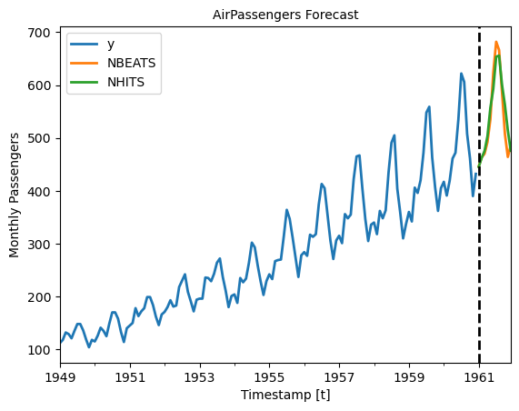

from neuralforecast.utils import AirPassengersDF
Y_df = AirPassengersDF
Y_df = Y_df.reset_index(drop=True)
Y_df.head()| unique_id | ds | y | |
|---|---|---|---|
| 0 | 1.0 | 1949-01-31 | 112.0 |
| 1 | 1.0 | 1949-02-28 | 118.0 |
| 2 | 1.0 | 1949-03-31 | 132.0 |
| 3 | 1.0 | 1949-04-30 | 129.0 |
| 4 | 1.0 | 1949-05-31 | 121.0 |
Saving and loading trained Deep Learning models has multiple valuable uses. These models are often costly to train; storing a pre-trained model can help reduce costs as it can be loaded and reused to forecast multiple times. Moreover, it enables Transfer learning capabilities, consisting of pre-training a flexible model on a large dataset and using it later on other data with little to no training. It is one of the most outstanding 🚀 achievements in Machine Learning 🧠 and has many practical applications.
In this notebook we show an example on how to save and load NeuralForecast models.
The two methods to consider are:
1. NeuralForecast.save: Saves models into disk, allows save dataset and config.
2. NeuralForecast.load: Loads models from a given path.
This Guide assumes basic knowledge on the NeuralForecast library. For a minimal example visit the Getting Started guide.
You can run these experiments using GPU with Google Colab.

%%capture !pip install neuralforecast
For this example we will use the classical AirPassenger Data set. Import the pre-processed AirPassenger from utils.
from neuralforecast.utils import AirPassengersDF
Y_df = AirPassengersDF
Y_df = Y_df.reset_index(drop=True)
Y_df.head()| unique_id | ds | y | |
|---|---|---|---|
| 0 | 1.0 | 1949-01-31 | 112.0 |
| 1 | 1.0 | 1949-02-28 | 118.0 |
| 2 | 1.0 | 1949-03-31 | 132.0 |
| 3 | 1.0 | 1949-04-30 | 129.0 |
| 4 | 1.0 | 1949-05-31 | 121.0 |
Next, we instantiate and train three models: NBEATS, NHITS, and AutoMLP. The models with their hyperparameters are defined in the models list.
from ray import tune
from neuralforecast.core import NeuralForecast
from neuralforecast.auto import AutoMLP
from neuralforecast.models import NBEATS, NHITShorizon = 12
models = [NBEATS(input_size=2 * horizon, h=horizon, max_steps=50),
NHITS(input_size=2 * horizon, h=horizon, max_steps=50),
]Global seed set to 1
Global seed set to 1nf = NeuralForecast(models=models, freq='M')
nf.fit(df=Y_df)Produce the forecasts with the predict method.
Y_hat_df = nf.predict().reset_index()
Y_hat_df.head()| unique_id | ds | NBEATS | NHITS | |
|---|---|---|---|---|
| 0 | 1.0 | 1961-01-31 | 446.280823 | 445.295135 |
| 1 | 1.0 | 1961-02-28 | 463.121948 | 462.276184 |
| 2 | 1.0 | 1961-03-31 | 470.079895 | 475.442902 |
| 3 | 1.0 | 1961-04-30 | 492.255310 | 503.250916 |
| 4 | 1.0 | 1961-05-31 | 535.243164 | 556.968689 |
We plot the forecasts for each model. Note how the two NBEATS models are differentiated with a numerical suffix.
import pandas as pd
import matplotlib.pyplot as pltplot_df = pd.concat([Y_df, Y_hat_df]).set_index('ds') # Concatenate the train and forecast dataframes
plt.figure(figsize = (12, 3))
plot_df[['y', 'NBEATS', 'NHITS']].plot(linewidth=2)
plt.title('AirPassengers Forecast', fontsize=10)
plt.ylabel('Monthly Passengers', fontsize=10)
plt.xlabel('Timestamp [t]', fontsize=10)
plt.axvline(x=plot_df.index[-horizon], color='k', linestyle='--', linewidth=2)
plt.legend(prop={'size': 10})<Figure size 1200x300 with 0 Axes>
To save all the trained models use the save method. This method will save both the hyperparameters and the learnable weights (parameters).
The save method has the following inputs:
path: directory where models will be saved.model_index: optional list to specify which models to save. For example, to only save the NHITS model use model_index=[2].overwrite: boolean to overwrite existing files in path. When True, the method will only overwrite models with conflicting names.save_dataset: boolean to save Dataset object with the dataset.nf.save(path='./checkpoints/test_run/',
model_index=None,
overwrite=True,
save_dataset=True)For each model, two files are created and stored:
[model_name]_[suffix].ckpt: Pytorch Lightning checkpoint file with the model parameters and hyperparameters.[model_name]_[suffix].pkl: Dictionary with configuration attributes.Where model_name corresponds to the name of the model in lowercase (eg. nhits). We use a numerical suffix to distinguish multiple models of each class. In this example the names will be automlp_0, nbeats_0, and nhits_0.
The Auto models will be stored as their base model. For example, the AutoMLP trained above is stored as an MLP model, with the best hyparparameters found during tuning.
Load the saved models with the load method, specifying the path, and use the new nf2 object to produce forecasts.
nf2 = NeuralForecast.load(path='./checkpoints/test_run/')
Y_hat_df = nf2.predict().reset_index()
Y_hat_df.head()Global seed set to 1
Global seed set to 1| unique_id | ds | NHITS | NBEATS | |
|---|---|---|---|---|
| 0 | 1.0 | 1961-01-31 | 445.295135 | 446.280823 |
| 1 | 1.0 | 1961-02-28 | 462.276184 | 463.121948 |
| 2 | 1.0 | 1961-03-31 | 475.442902 | 470.079895 |
| 3 | 1.0 | 1961-04-30 | 503.250916 | 492.255310 |
| 4 | 1.0 | 1961-05-31 | 556.968689 | 535.243164 |
Finally, plot the forecasts to confirm they are identical to the original forecasts.
plot_df = pd.concat([Y_df, Y_hat_df]).set_index('ds') # Concatenate the train and forecast dataframes
plt.figure(figsize = (12, 3))
plot_df[['y', 'NBEATS', 'NHITS']].plot(linewidth=2)
plt.title('AirPassengers Forecast', fontsize=10)
plt.ylabel('Monthly Passengers', fontsize=10)
plt.xlabel('Timestamp [t]', fontsize=10)
plt.axvline(x=plot_df.index[-horizon], color='k', linestyle='--', linewidth=2)
plt.legend(prop={'size': 10})
plt.show()<Figure size 1200x300 with 0 Axes>
https://pytorch-lightning.readthedocs.io/en/stable/common/checkpointing_basic.html